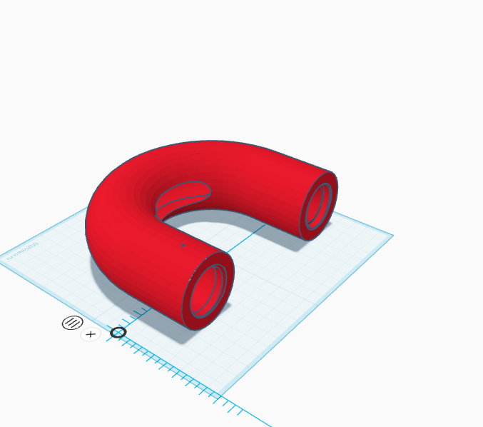

There are 122 million people at risk due to cancer-causing chemicals in drinking water (ewg.org). These chemicals have led to bladder cancer, colorectal cancer, and even birth defects. It is our goal to prevent this hazardous environment and reduce this danger worldwide.
Our Solution
The solution is a three-part water filter mimicking the anatomy of a common clam, and how the clam filters water for feeding. A clam uses a filtering mechanism called a ctenidia attached to their gills to intake water on one side of the clam, and project filtered water out the other, which is the inspiration for the shape of the filter. The filter consists of a three-stage filtration system. First, a metal mesh removes any large objects. The water passes through a mixture of silicone cilia, which are present in clams, helping to capture smaller contaminants. The cilia include a layer of okra bioflocculant, a sticky gel-like matrix of polysaccharide carbohydrates derived from the okra plant. This bioflocculant has been known to bind and neutralize contaminants. The contaminants are trapped by the structure of the matrix. Lastly, the filtered water passes through another mesh screen. A laser light is shone from one end of the pipe, perpendicular to the flow, with a photometer. If the laser light dims due to increasing amounts of impurities, the photometer will send a signal to an arduino, which sends a signal to a web app that notifies the user to replace the filtration system.
Expected Impact
Our solution will be capable of removing such contaminants from municipal water systems. Due to municipal water systems not commonly having safe methods of combating water pollution, this solution allows each person to protect themselves from contaminated water. Municipal water systems use filtration methods like coagulation, flocculation, and disinfection (Seven Seas Water Group). These methods all include using chemicals that can pollute the water that the everyday person may drink. Our solution will be able to rid of these chemicals before they can get into a person's household drinking water, preventing any detrimental impacts on the community’s health.
Filter Status

Filter status:Unknown
Notifications (0)
Sensei Teaching Sale — 20% off courses
Sign up this month and save on Sensei Mason Teachings.
Gabriel Blender Models
Order a custom model and it will be made when Gabriel learns blender this week.